Toggle down for bootstrap plots
The numbers in these don't match with the combined dNdS + positive selection plot because of different filtering steps.

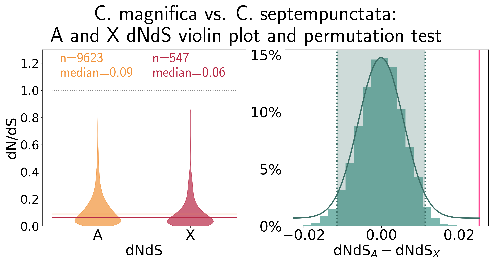
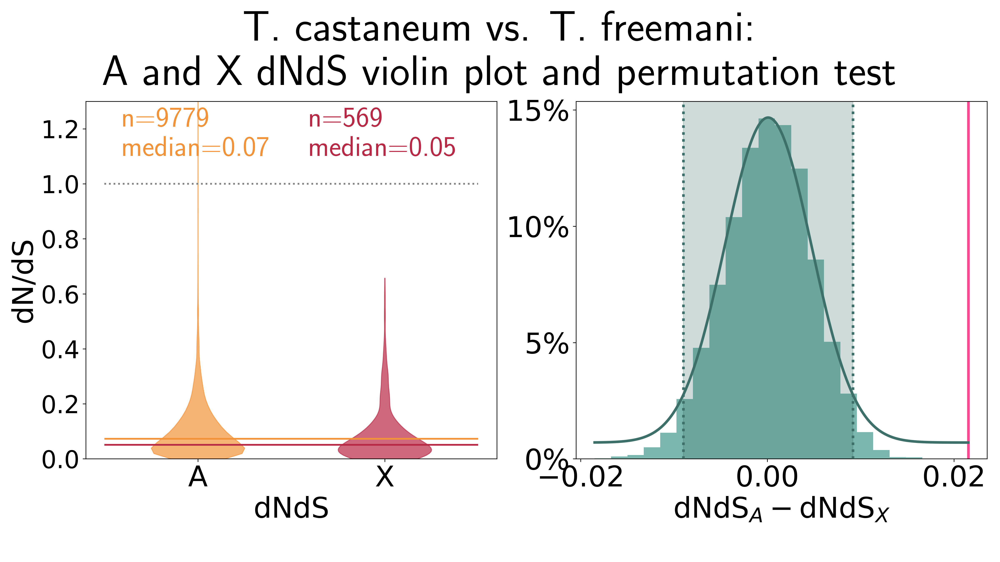
Git repository here
Revision stuff here
Annotate T. freemani and C. septempunctata from scratch because it's not available, see SI for details
Run MCScanX for synteny analysis. It is not super easy to use and a bunch of stuff is hardcoded that is not mentioned anywhere in the documentation.
./MCScanX prefix where the input files are prefix.gff and prefix.blast in the same directory.
prefix.gff: I used my script src/make_bedfile_for_MCScanX.py which makes all the files according to the format required, including reformatting the contig names,
and also creating a lookup table to associate the new contig names with the original ones from the annotations.
The files are then all merged with cat *.bed > prefix.gffprefix.blast: I am using blastp according to the above cited workflow on all the species
bash/blastp_for_synteny.sh. All blast results are again merged cat *.blast > prefix.blast.no alighments generated: The log file reads no blast alignments. For me, this was caused by the file extension of the annotation file.
I named it .bed but it should be .gff (because it is somehow hardcoded and there is no test to see if a file actually exists?)
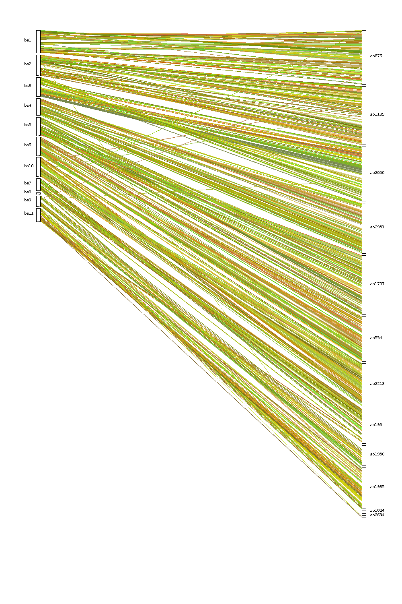
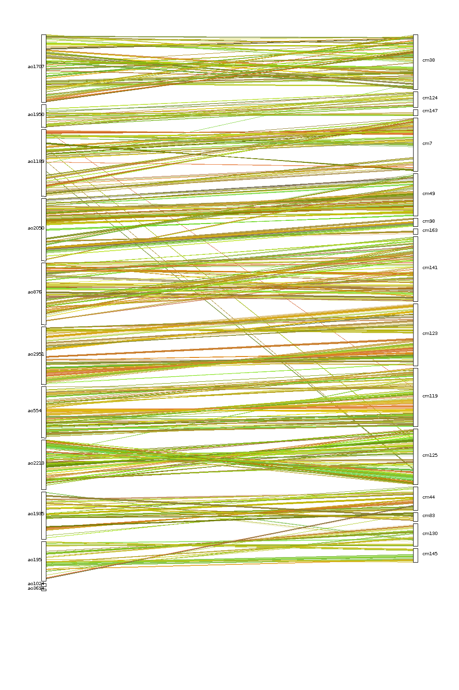
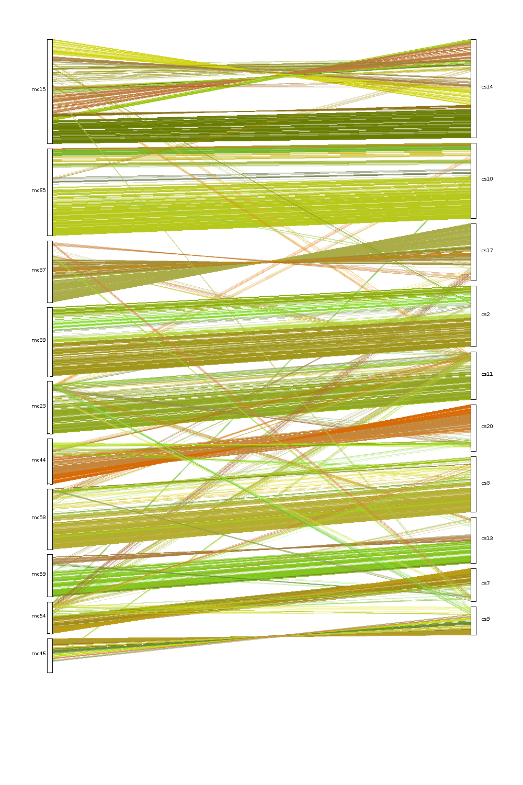
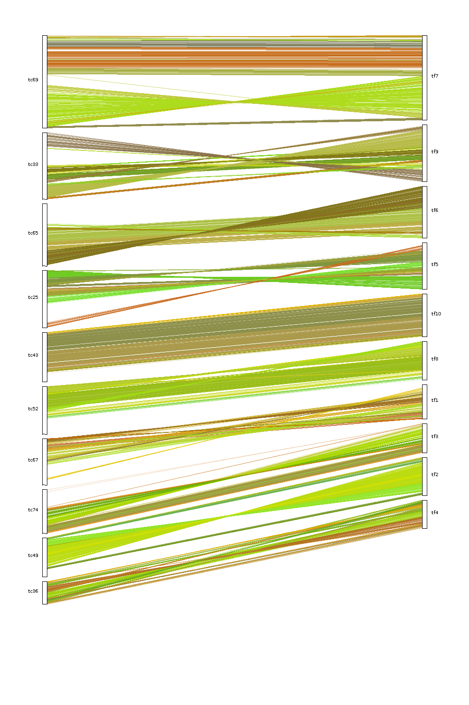
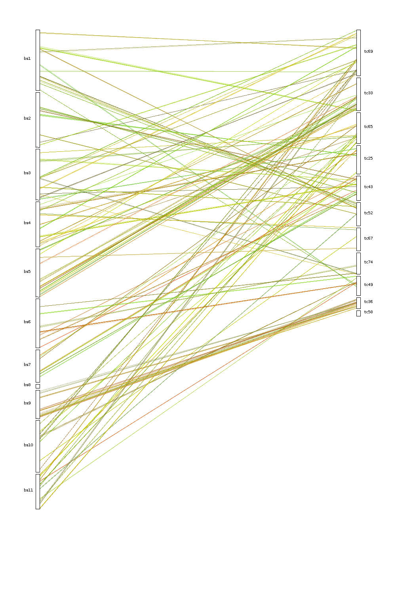
bash/blastp_for_synteny.sh (same blast results as I use for syntenysrc/blast_BRH/make_blastBRH_all_species.py
src/blast_BRH/get_blast_BRH.pybash/BRH_orthologs.sh to iterate over all pairs and run the python scriptsrc/blast_BRH/make_blastBRH_all_species.py, but it is old and not used for the final analysis but I'm scared to delete itsrc/blast_BRH/make_pairwise_BRH_fasta_files.py
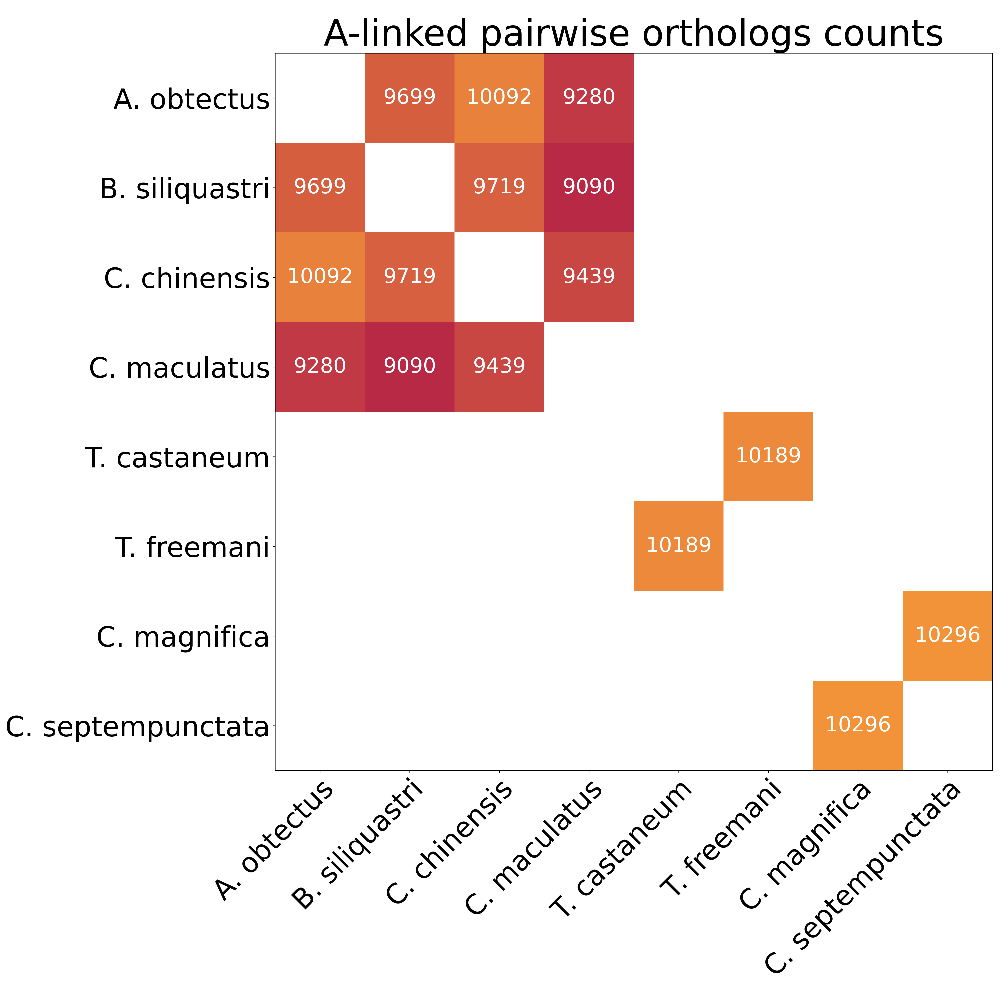
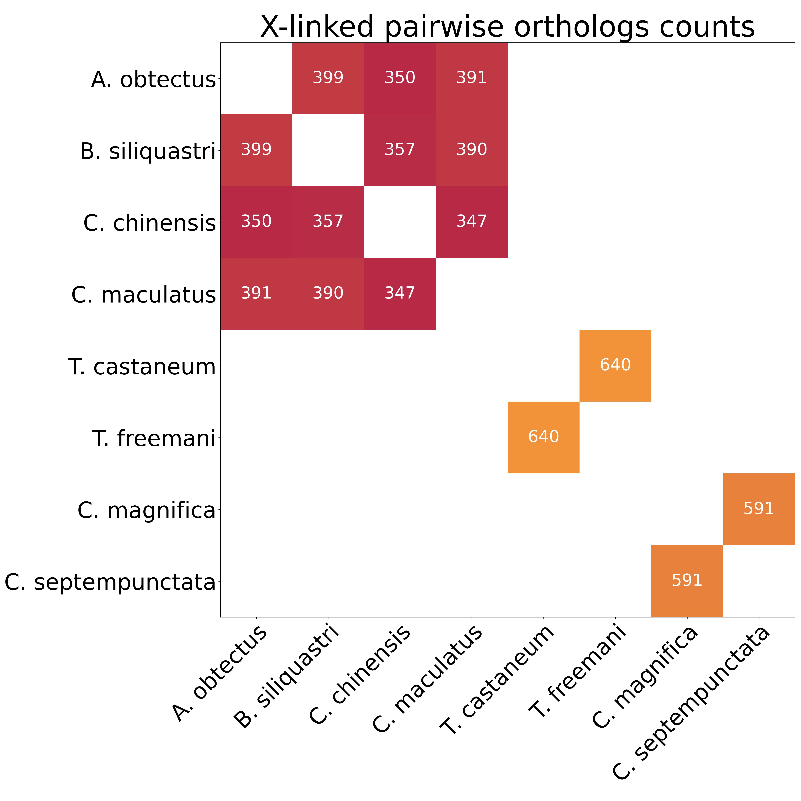
paml codeml
I will run runmode= -2, CodonFreq = 2. In order to properly parallelize this the scripts are
nested like this:
src/blast_BRH/calculate_pairwise_dNdS.py is the main script that runs the pipeline based on one input fasta filebash/run_batch_dNdS_A.sh (or X) loops over a list of input files to run the main scriptsrc/blast_BRH/calculate_batch_pw_dNdS.py separates the entire list of input files into several batches to run in parallelbash/run_python_wrapper_for_batch_dNdS.sh runs the batch-separation script as a slurm job since it can be quite computationally intensive for long nested files lists
This launches a long list jobs, one for each batch of orthologs, that all run in parallel. Each job individually should all take less than an hour. I have separated everything for A and X
into its own directories, so the outermost bash script bash/run_python_wrapper_for_batch_dNdS.sh has to be run from either the A or X species directory and then also pass
the corresponding "A" or "X" command line argument to the batching python script.
This results in a separate directory for each ortholog where the dN and dS values are in separate files called 2ML.dN and 2ML.dS, and the script calculates
a dNdS value already into a separate file called 2ML.dNdS. Since this does not take any filtering for maximum dN and dS value into account that we apply later,
this will not be used in the future.
the dN and dS values can be summarized into one list using src/blast_BRH/extract_dNdS_Results.py (and bash/run_extract_dNdS_results.sh to run it as a
slurm job since this also takes a bit to loop through all the autosomes). This again results in two separate files, one for A and one for X orthologs.
data/DE_analysis/paml_summary_tables/dNdS_by_A_ortholog_pairwise_revisions.txtdata/DE_analysis/paml_summary_tables/dNdS_by_X_ortholog_pairwise_revisions.txt
All analyses performed with src/plot_dS.py. I look at only dS values, filtered to only include dS < 2. The bootstrap results are this for 10000 permutations:
A_obtectus vs. B_siliquastri: median(dNdS_A)-median(dNdS_X) = 0.091, mean bootstrap diff = 0.00004 with CI [-0.03090,0.03098] -> SIGNIFICANT
A_obtectus vs. C_maculatus: median(dNdS_A)-median(dNdS_X) = 0.109, mean bootstrap diff = -0.00003 with CI [-0.03241,0.03234] -> SIGNIFICANT
A_obtectus vs. C_chinensis: median(dNdS_A)-median(dNdS_X) = 0.076, mean bootstrap diff = -0.00003 with CI [-0.03737,0.03730] -> SIGNIFICANT
B_siliquastri vs. C_maculatus: median(dNdS_A)-median(dNdS_X) = 0.133, mean bootstrap diff = -0.00009 with CI [-0.02648,0.02630] -> SIGNIFICANT
B_siliquastri vs. C_chinensis: median(dNdS_A)-median(dNdS_X) = 0.107, mean bootstrap diff = 0.00008 with CI [-0.02959,0.02975] -> SIGNIFICANT
C_chinensis vs. C_maculatus: median(dNdS_A)-median(dNdS_X) = 0.048, mean bootstrap diff = 0.00013 with CI [-0.01822,0.01848] -> SIGNIFICANT
C_magnifica vs. C_septempunctata: median(dNdS_A)-median(dNdS_X) = 0.047, mean bootstrap diff = -0.00001 with CI [-0.01085,0.01082] -> SIGNIFICANT
T_castaneum vs. T_freemani: median(dNdS_A)-median(dNdS_X) = 0.002, mean bootstrap diff = 0.00001 with CI [-0.01141,0.01143] -> (nonsignificant)
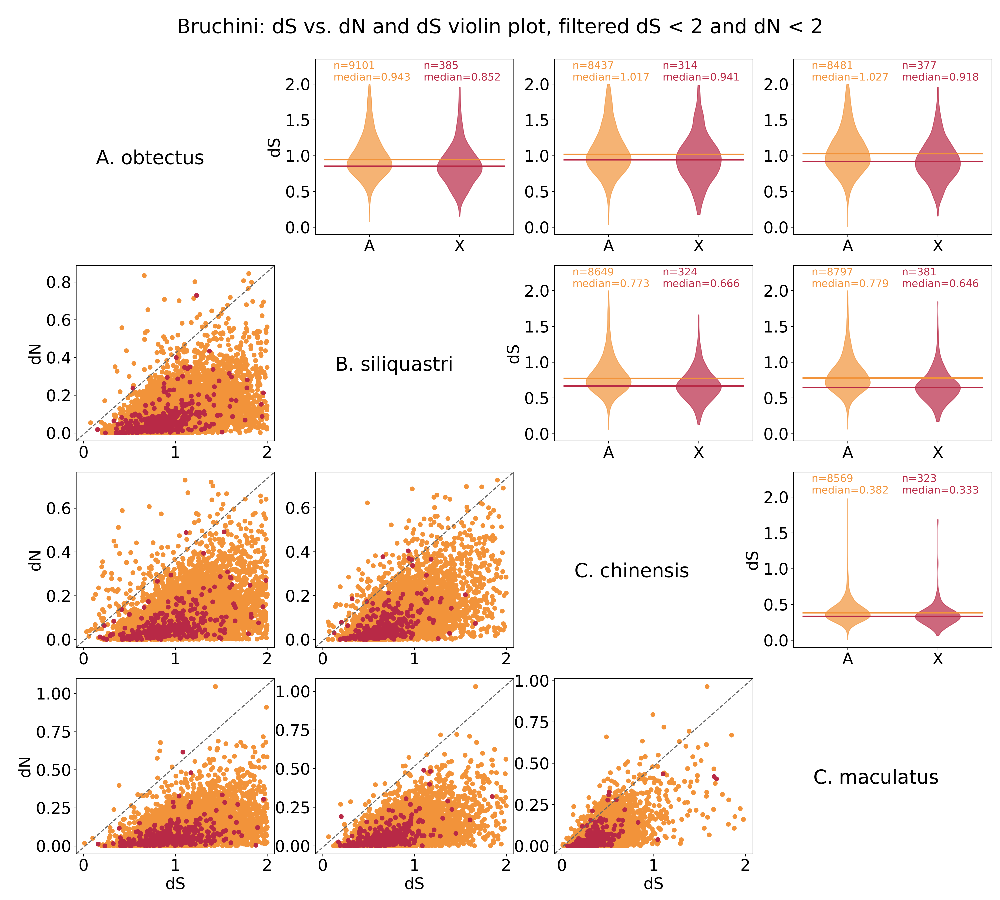
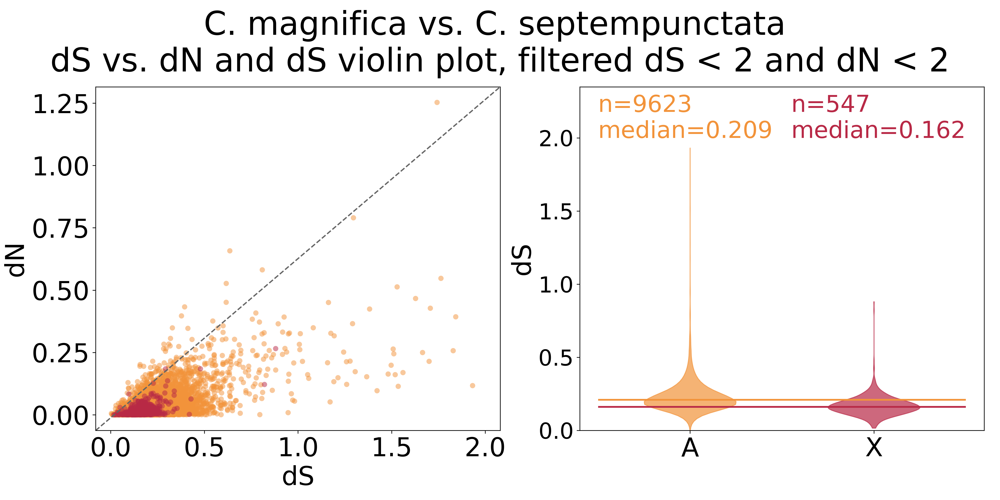
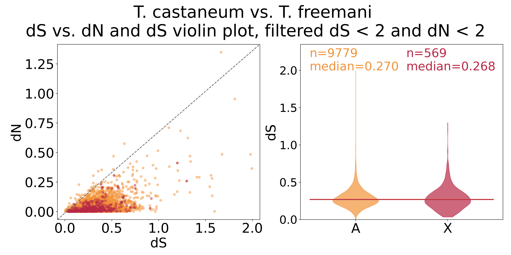
The script used for this is src/plot_dNdS.py, and the values are filtered again to dNdS < 2.
10000 permutations again, and everything is still significant as before.
A_obtectus vs. B_siliquastri: median(dNdS_A)-median(dNdS_X) = 0.018, mean bootstrap diff = -0.00002 with CI [-0.00830,0.00827] -> SIGNIFICANT
A_obtectus vs. C_chinensis: median(dNdS_A)-median(dNdS_X) = 0.018, mean bootstrap diff = -0.00010 with CI [-0.01083,0.01064] -> SIGNIFICANT
A_obtectus vs. C_maculatus: median(dNdS_A)-median(dNdS_X) = 0.019, mean bootstrap diff = 0.00004 with CI [-0.00749,0.00758] -> SIGNIFICANT
B_siliquastri vs. C_chinensis: median(dNdS_A)-median(dNdS_X) = 0.022, mean bootstrap diff = 0.00005 with CI [-0.00971,0.00980] -> SIGNIFICANT
B_siliquastri vs. C_maculatus: median(dNdS_A)-median(dNdS_X) = 0.023, mean bootstrap diff = 0.00007 with CI [-0.00799,0.00812] -> SIGNIFICANT
C_chinensis vs. C_maculatus: median(dNdS_A)-median(dNdS_X) = 0.020, mean bootstrap diff = -0.00001 with CI [-0.01255,0.01253] -> SIGNIFICANT
C_magnifica vs. C_septempunctata: median(dNdS_A)-median(dNdS_X) = 0.025, mean bootstrap diff = -0.00002 with CI [-0.01136,0.01131] -> SIGNIFICANT
T_castaneum vs. T_freemani: median(dNdS_A)-median(dNdS_X) = 0.022, mean bootstrap diff = -0.00004 with CI [-0.00927,0.00919] -> SIGNIFICANT
The numbers in these don't match with the combined dNdS + positive selection plot because of different filtering steps.


This does not change for the revision for dNdS with codeml runmode=-2, the code is src/plotting/analyze_site_classes.py.
A_obtectus vs. B_siliquastri mean(bin_A)-mean(bin_X) = -0.0353, mean bootstrap diff = -0.00027 with CI [-0.02688,0.02634] -> SIGNIFICANT
A_obtectus vs. C_chinensis mean(bin_A)-mean(bin_X) = -0.0450, mean bootstrap diff = 0.00011 with CI [-0.02587,0.02609] -> SIGNIFICANT
A_obtectus vs. C_maculatus mean(bin_A)-mean(bin_X) = -0.0417, mean bootstrap diff = 0.00014 with CI [-0.02064,0.02091] -> SIGNIFICANT
B_siliquastri vs. C_chinensis mean(bin_A)-mean(bin_X) = -0.0542, mean bootstrap diff = 0.00023 with CI [-0.03372,0.03419] -> SIGNIFICANT
B_siliquastri vs. C_maculatus mean(bin_A)-mean(bin_X) = -0.0359, mean bootstrap diff = -0.00004 with CI [-0.02762,0.02753] -> SIGNIFICANT
C_chinensis vs. C_maculatus mean(bin_A)-mean(bin_X) = -0.0846, mean bootstrap diff = 0.00000 with CI [-0.03933,0.03933] -> SIGNIFICANT
C_magnifica vs. C_septempunctata mean(bin_A)-mean(bin_X) = 0.0227, mean bootstrap diff = -0.00024 with CI [-0.02851,0.02803] -> (nonsignificant)
T_castaneum vs. T_freemani mean(bin_A)-mean(bin_X) = -0.0066, mean bootstrap diff = -0.00004 with CI [-0.02975,0.02968] -> (nonsignificant)
The numbers in these don't match with the combined dNdS + positive selection plot because of different filtering steps.

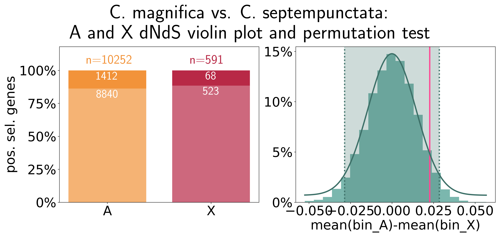
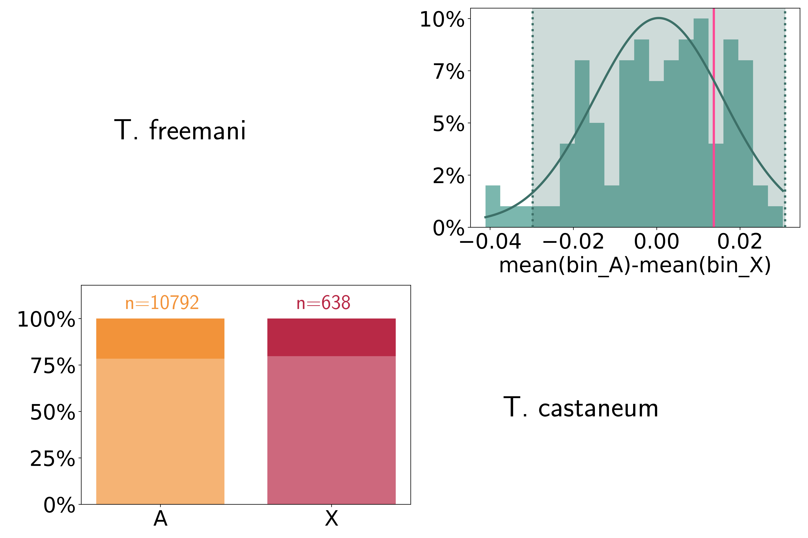
This is the plot that combines dNdS and positive selection that appears in the main text of the paper. The sample sizes here don't match between the dNdS violins and the pos. sel. bars anymore, I think because the new codeml mode has more occasions where the output doesn't converge or something?

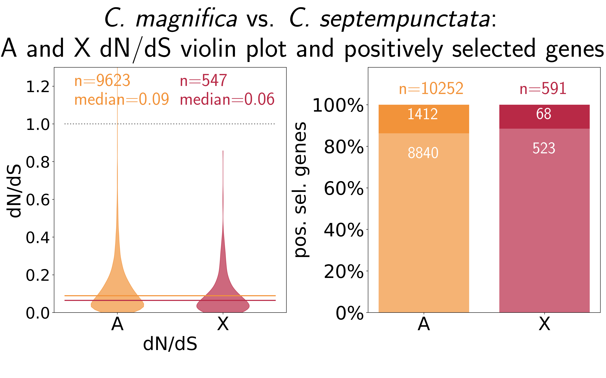
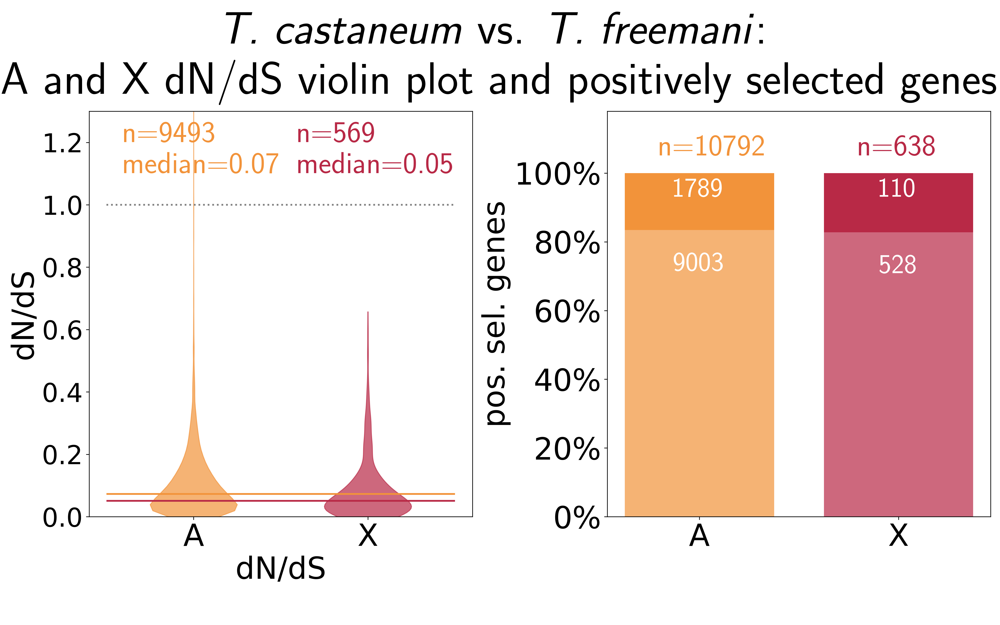
We hypothesize that the evolutionary rates are different for older vs. younger genes and therefore incorporate a measure of gene age (from the perspective of C. maculatus into our analyses). It describes what species is the most distant to still contain a 1-to-1 ortholog: a gene of age 1 is the youngest and the ortholog is only shared with the closest sister species of C. chinensis, while a gene age of 5 is the most conserved with an ortholog in D. melanogaster.
src/make_DE_analysis_table.py: make the summary tables for A and X (already includes the expression as well).
data/DE_analysis/paml_summary_tables/DE_summary_table_A_chr.tsvdata/DE_analysis/paml_summary_tables/DE_summary_table_X_chr.tsvsrc/plotting/analyze_dNdS_LFC.py: plot the boxplots of dNdS split by age rank (last section, function plot_dNdS_rank_conserved())The sample size numbers don't change here after revision because this already comes from the summary table with the expression data and is therefore downfiltered to only include genes that are present in that. The median/quantiles in the boxplots change slightly but the overall trend remains.
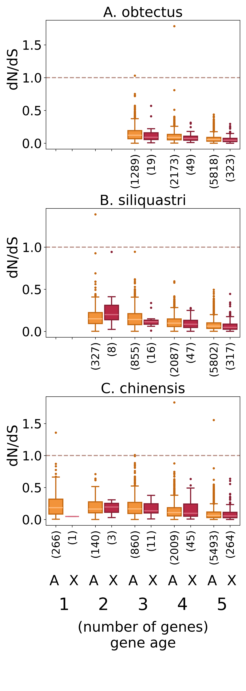
Median quantile regression with wald test to drop explanatory variables and see if they make a significant difference. This way We can get a p-value for just the gene age (and gene age by chromosome interaction) without worrying about the intercept for interpretation. Further, the results below do agree with the permutation test and show a significantly lower dNdS on X, but it also takes the gene age effect into account.
The code is also in src/plotting/analyze_dNdS_LFC.py, in the function statistical_analysis_dNdS(... , include_sex_bias=False).
Since the response variable is dNdS, the analysis can be done from the perspective of C. maculatus with each of the three other Bruchini species.
dNdS_vs_gene_age_medianreg_wald_test_C_chinensis.txtInteraction gene age by chromosome not significant but gene age alone strongly significant.
Chromosome alone is insignificant, only becomes significant when excluding gene age as explanatory variable.
dNdS_vs_gene_age_medianreg_wald_test_B_siliquastri.txtInteraction gene age by chromosome is significant. Therefore the reduced nested model doesn't really matter anymore
but it is still significant.
dNdS_vs_gene_age_medianreg_wald_test_A_obtectus.txtInteraction gene age by chromosome not significant but gene age alone strongly significant
There is no plot here it's not statistically significant, see below.
The statistical analysis here is a logistic regression with positive selection as the categorically binary response variable to infer an effect of gene age and chromosome.
The code is also in src/plotting/analyze_dNdS_LFC.py, in the function statistical_analysis_pos_sel(... , include_sex_bias=False).
In all cases, both chromosome by gene age interaction as well as gene age as a main effect are insignificant. When both are excluded, chromosome class becomes significant with a positive coefficient (enrichment of positively selected genes on the X), which is in agreement with the permutation test.
pos_sel_vs_gene_age_LR_wald_test_C_chinensis.txt
pos_sel_vs_gene_age_LR_wald_test_B_siliquastri.txt
pos_sel_vs_gene_age_LR_wald_test_A_obtectus.txt
The data contains head+thorax (somatic) and abdominal (reproductive) tissues, and we will further apply a split between autosomes and the X chromosome.
This analysis is based on the same summary table as the age rank before, created with src/make_DE_analysis_table.py.
We investigate if the sex bias changes significantly across age ranks, the code is in src/plotting/analyze_phylo_rank_LFC.py
We are running a multiomial logistic regression where the sex-bias categories (male, female, unbiased) are discrete categorical response variables.
The function in the code is make_log_reg_table()
The plot was created with make_category_proportion_plot() in the above script.
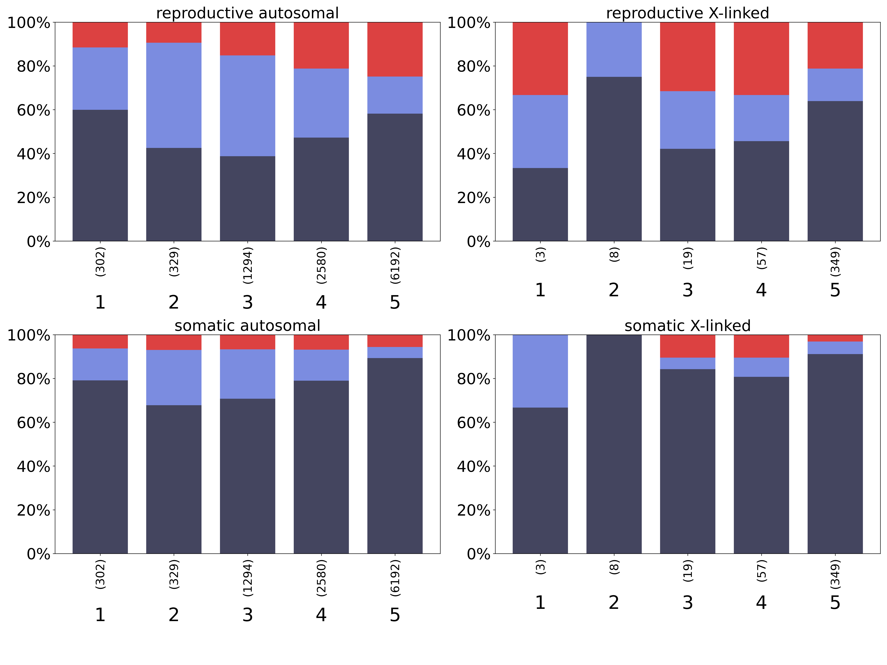
sex_bias_by_age_rank_logreg_A_abdomen.txt
sex_bias_by_age_rank_logreg_X_abdomen.txt
sex_bias_by_age_rank_logreg_A_head_thorax.txt
sex_bias_by_age_rank_logreg_X_head_thorax.txt
Unlike before, when the sex bias was three categories (male, female, unbiased), here we only look at significantly differentially expressed genes (excluding all unbiased ones),
and their numerical log2FC value. The quantile regression (logFC_quantile_regression() in the same file as above) uses absolute log2FC values and then male/female-biased
categories as additional explanatory variables.
The plot was created with check_DE_phylogeny_rank_conserved().
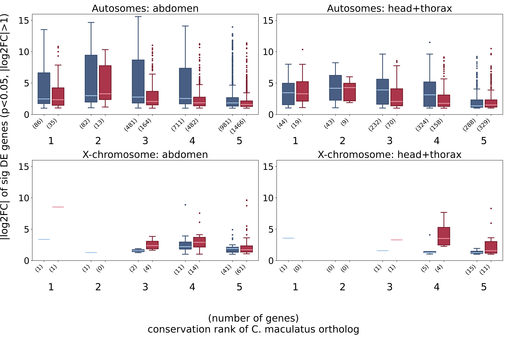
The plot was created with logFC_quantile_regression(..., sep_MF=False) in the above script, in order to include the sex-bias category as an explanatory variable
and not run separate analyses for male and female-biased genes.
sex_bias_by_age_rank_quantreg_A_abdomen.txt
sex_bias_by_age_rank_quantreg_X_abdomen.txt
sex_bias_by_age_rank_quantreg_A_head_thorax.txt
sex_bias_by_age_rank_quantreg_X_head_thorax.txt
Since sex-biased expression can evolve very quickly between species, the analysis will be further restricted to only C. chinensis as the closest relative of C. maculatus. All of this analysis is in src/plotting/analyze_dNdS_LFC.py (even though it only has dNdS in the name, there's bool arguments to switch to positive selection for the plotting).
dNdS is modelled as a continuous response again using a median quantile regression using the function statistical_analysis_dNdS(..., do_chinensis_sex_bias=True)
to now actually include differential expression in the dNdS by age rank analysis. The plots are created with boxplot_dNdS(..., pos_sel=False, lineplot=True)
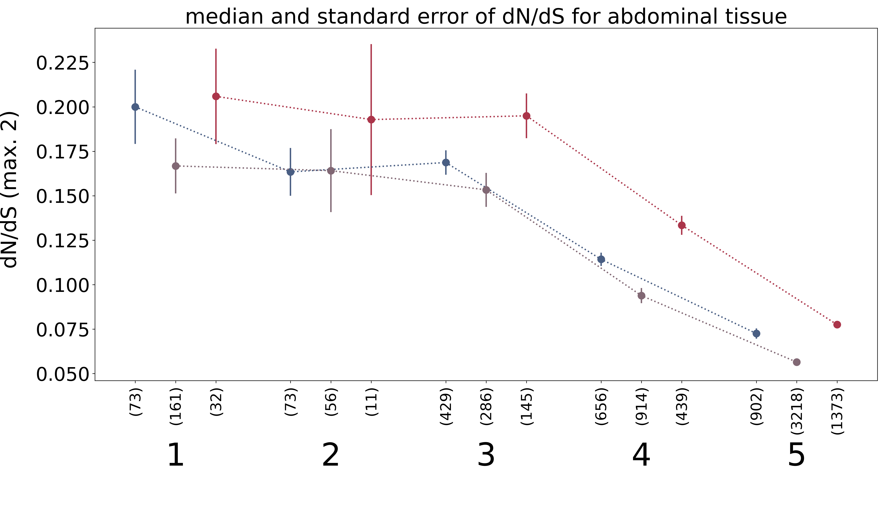
dNdS_vs_gene_age_medianreg_wald_test_C_chinensis_logFC_A_abdomen.txt
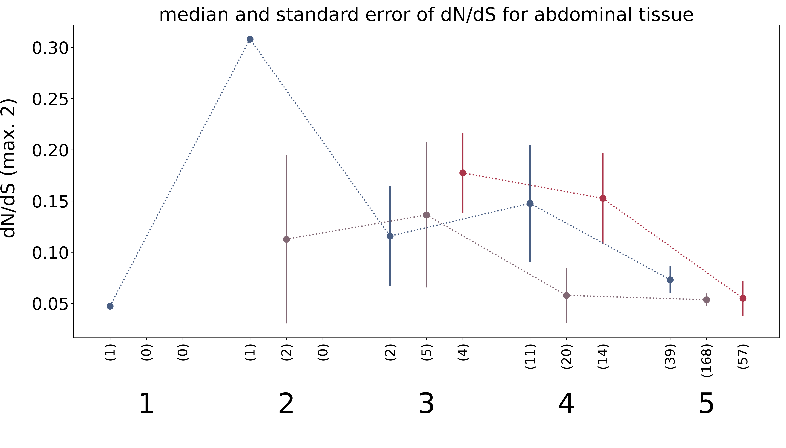
dNdS_vs_gene_age_medianreg_wald_test_C_chinensis_logFC_X_abdomen.txt
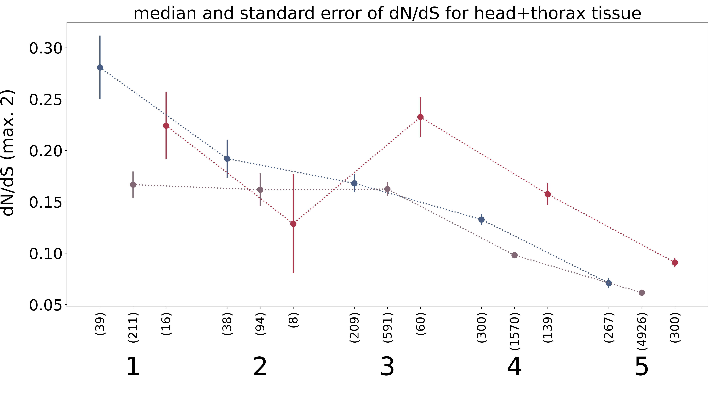
dNdS_vs_gene_age_medianreg_wald_test_C_chinensis_logFC_A_head_thorax.txt
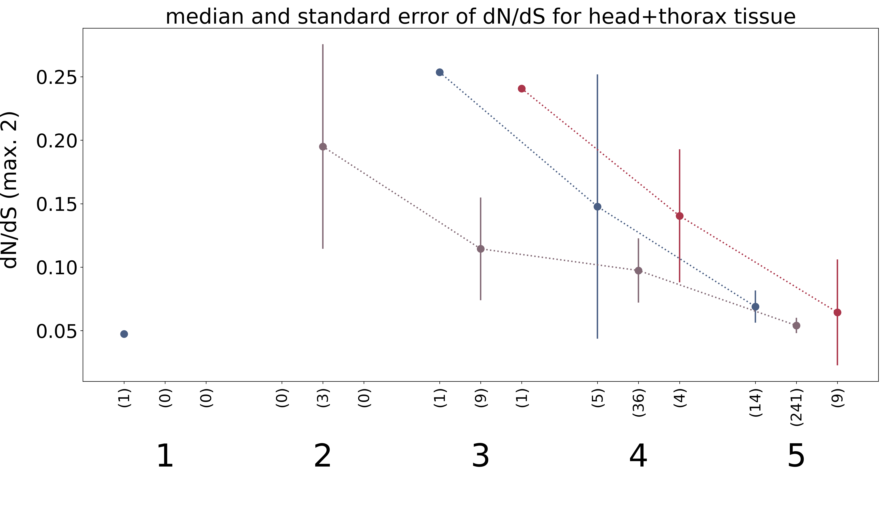
dNdS_vs_gene_age_medianreg_wald_test_C_chinensis_logFC_X_head_thorax.txt
This is a logistic regression since the response variable is a binary category, therefore for maths reasons I don't remember right now you can't do a wald test on that. Since we tested the impact of age rank on positively selected genes and found no significant effect, we run a model without the age rank (but scroll down to see full model with age rank).
Only the intercept is significant, but no other differences between categories.
pos_sel_vs_gene_age_LR_wald_test_with_sex_bias_C_chinensis_abdomen.txt
The intercept is significant as well as C(SB_head_thorax)[T.unbiased], no sig. differences for anything else.
pos_sel_vs_gene_age_LR_wald_test_with_sex_bias_C_chinensis_head_thorax.txt
This confirms previous results that the age rank makes no impact. The intercept is significant, which is rank 1 A. The X chromosome only becomes significant when the age rank is excluded (scroll down)
pos_sel_vs_gene_age_LR_wald_test_with_sex_bias_C_chinensis_no_expression_data.txt
The comparisons are either all X-linked genes compared to the background set of all autosomal genes, or X-linked genes under positive selection compared to autosomal genes under positive selection
data/GO_enrichment/all_AX_enriched_GOs.csv.
data/GO_enrichment/sig_AX_enriched_GOs.csv. dosage compensation is enriched here!
These comparisons are always between genes under positive selection vs. genes that are not, and the data is either subset to only-X, only-A or not subset (the whole genome).
data/GO_enrichment/X_C_chinensis_enriched_GOs.csv.
data/GO_enrichment/A_C_chinensis_enriched_GOs.csv
data/GO_enrichment/allsig_enriched_GOs.csv